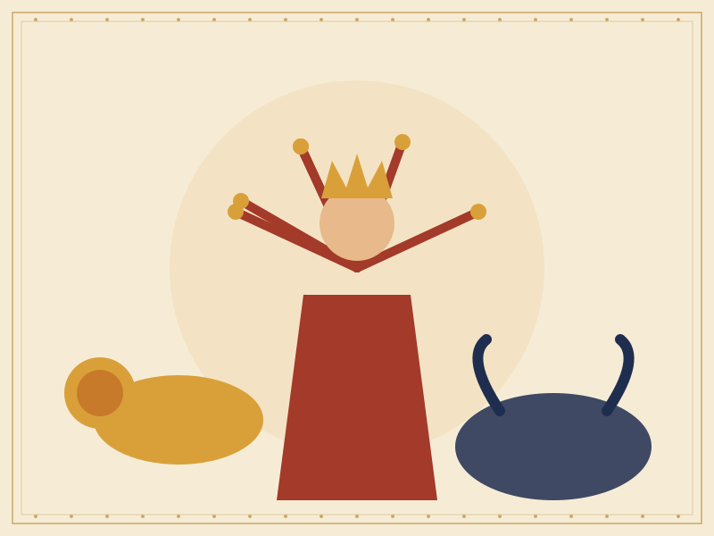
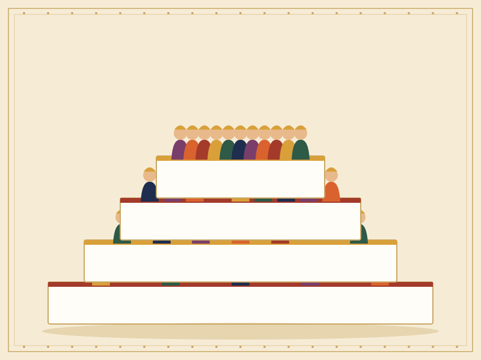

Sample story
Durga and the Buffalo Demon
How a goddess born from the gods’ combined strength restored balance to the worlds.

A goddess is born
In one well-known telling, the demon Mahishasura had received a boon that made him nearly unbeatable by gods and men. He grew powerful, and the heavens were thrown into disorder. The gods, unable to defeat him alone, joined their energies together.
From that combined radiance emerged Durga, a goddess who was given weapons by each of the gods, and a lion to ride. Her many arms each held a gift from the divine family.
Nine nights and a tenth day
The battle between the goddess and the demon is traditionally counted over nine nights. Each night is honoured during Navaratri. On the tenth day, Vijayadashami, the victory of good over evil is celebrated.

Why it is shown in Golu
Many displays give Durga a place of honour, so she can watch over the whole arrangement. Her figure reminds visitors that courage and unity can overcome even the most difficult challenge.